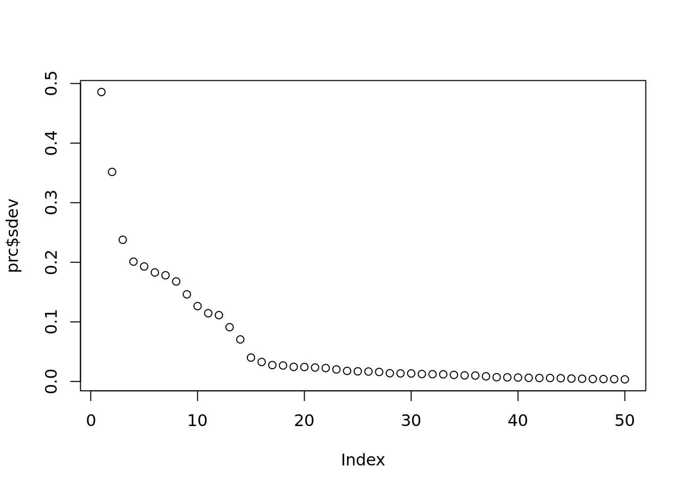
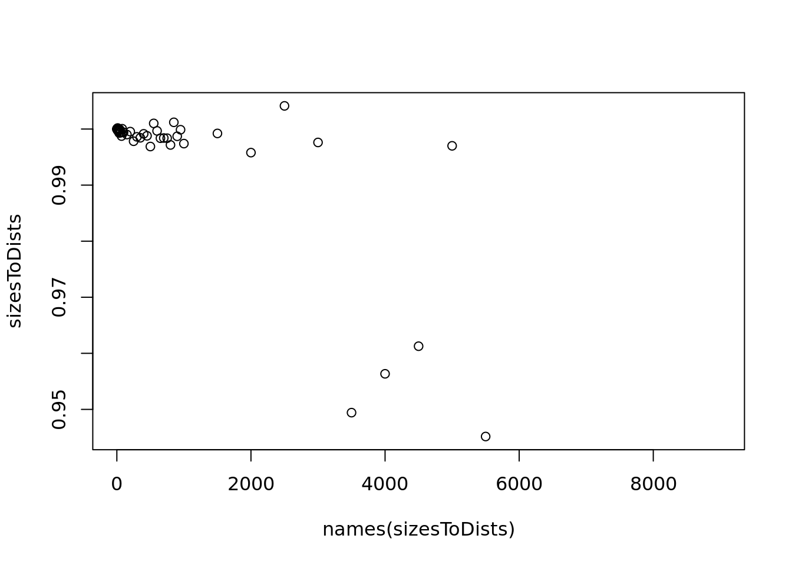
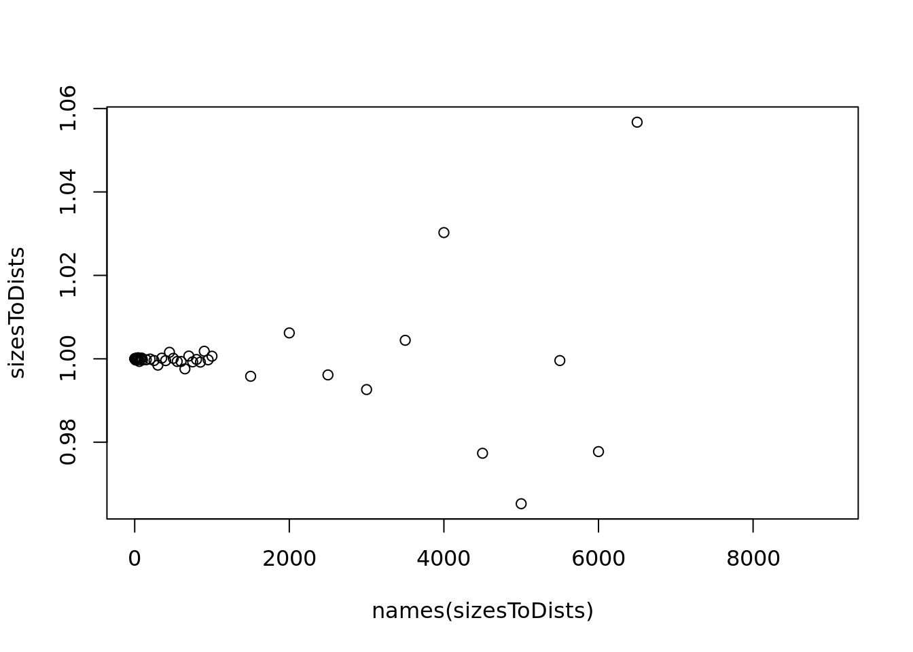

library(rlang)
library(testthat)
library(ggplot2)
library(tibble)
library(zeallot)
library(Seurat)
library(aricode)
library(funtimes)
library(monocle3)
library(cluster)
library(COTAN)
tunings = c('default', 'antibody', 'celltypist')
tools = c('monocle', 'scanpy', 'seurat', 'scvi-tools', 'COTAN')
averageClustersDistance <- function(probMatrixDF,
clustersList, numDim) {
squareDist <- function(subMatrix) {
subMatrix <- scale(subMatrix, scale = FALSE, center = TRUE)
return(sum(rowSums(subMatrix^2)))
}
pca <- PCAtools::pca(mat = probMatrixDF, rank = numDim, transposed = TRUE)
residual_variance = 100 - sum(pca[["variance"]])
normMatrix <- scale(x = pca[["rotated"]], center = TRUE, scale = TRUE)
rownames(normMatrix) <- rownames(probMatrixDF)
final_dimensions = dim(normMatrix)[2]
sumDist <- 0.0
for (cl in clustersList) {
sumDist <- sumDist + squareDist(normMatrix[cl, , drop = FALSE])
}
score = sumDist / ncol(normMatrix) / (nrow(normMatrix) - length(clustersList))
return(list("residual_variance" = residual_variance, "final_dimensions" = final_dimensions, "score" = score))
}Probability score computation
PBMC1
dataset = 'PBMC1'
celltypistPath = paste('Data/', dataset, '/celltypist/Immune_All_Low_probability_matrix.csv', sep='')
outPath = paste('Data/', dataset, '/probabilistic_score.csv', sep='')Load CellTypist clusterization
probMatrixDF <- read.csv(celltypistPath, header = TRUE)
probMatrixDF <- column_to_rownames(probMatrixDF, var = "X")
rownames(probMatrixDF) <- gsub("[.]", ":", rownames(probMatrixDF))
rownames(probMatrixDF) <- gsub("X10X", "10X", rownames(probMatrixDF))
rownames(probMatrixDF) <- substr(rownames(probMatrixDF), 1, nchar(rownames(probMatrixDF)) - 2)Estimate number of dimensions
prc <- PCAtools::pca(mat = probMatrixDF, rank = 50, transposed = TRUE)
plot(prc$sdev)
nDims <- 20Calculate the projection to spherical distribution [Malahanobis distance]: the sum of square distances from center of sub-cluster in pca-projected space
scores = data.frame()#"tool" = NA, "dataset" = dataset, "tuning" = NA, "score" = NA, "residual_variance" = NA, "final_dimensions" = NA)
for (tool in tools) {
for (tuning in tunings) {
labelsPath = paste('Data/', dataset, '/', tool, '/', tuning, '/clustering_labels.csv', sep='')
labels <- read.csv(labelsPath, header = TRUE)
clustersList<- split(as.character(labels$cell), labels$cluster)
score_data = averageClustersDistance(probMatrixDF, clustersList,numDim = nDims)
scores = rbind(
scores,
data.frame(
"tool" = tool,
"dataset" = dataset,
"tuning" = tuning,
"score" = score_data$score,
"residual_variance" = score_data$residual_variance,
"final_dimensions" = score_data$final_dimensions
)
)
}
}
write.csv(scores, outPath, row.names = FALSE)
scores tool dataset tuning score residual_variance final_dimensions
1 monocle PBMC1 default 0.9064319 0.6614691 20
2 monocle PBMC1 antibody 0.7098190 0.6614691 20
3 monocle PBMC1 celltypist 0.6698957 0.6614691 20
4 scanpy PBMC1 default 0.5717224 0.6614691 20
5 scanpy PBMC1 antibody 0.6405931 0.6614691 20
6 scanpy PBMC1 celltypist 0.5765256 0.6614691 20
7 seurat PBMC1 default 0.6290241 0.6614691 20
8 seurat PBMC1 antibody 0.6275275 0.6614691 20
9 seurat PBMC1 celltypist 0.5283759 0.6614691 20
10 scvi-tools PBMC1 default 0.6027325 0.6614691 20
11 scvi-tools PBMC1 antibody 0.6605860 0.6614691 20
12 scvi-tools PBMC1 celltypist 0.5735559 0.6614691 20
13 COTAN PBMC1 default 0.5470015 0.6614691 20
14 COTAN PBMC1 antibody 0.5467247 0.6614691 20
15 COTAN PBMC1 celltypist 0.5799735 0.6614691 20set.seed(42)
shuffledCells <- rownames(probMatrixDF)
rndDist <- function(n) {
clusters <- set_names(rep(1:n, ceiling(9000/n))[1:nrow(probMatrixDF)], shuffledCells)
cluster_list <- split(names(clusters), clusters)
d <- averageClustersDistance(probMatrixDF, cluster_list,nDims)
return(d$score)
}
sizes <- c(1:15, seq(20, 50, by = 5), seq(60, 100, by = 10),
seq(150, 1000, by = 50), seq(1500, 9000, by = 500))
sizesToDists <- vapply(sizes,rndDist, numeric(1))
names(sizesToDists) <- sizes
pdf(paste('Data/', dataset, '/probability_score_dim_dependency.pdf', sep=''))
plot(names(sizesToDists), sizesToDists)
dev.off()png
2 plot(names(sizesToDists), sizesToDists)PBMC2
dataset = 'PBMC2'
celltypistPath = paste('Data/', dataset, '/celltypist/Immune_All_Low_probability_matrix.csv', sep='')
outPath = paste('Data/', dataset, '/probabilistic_score.csv', sep='')Load CellTypist clusterization
probMatrixDF <- read.csv(celltypistPath, header = TRUE)
probMatrixDF <- column_to_rownames(probMatrixDF, var = "X")
rownames(probMatrixDF) <- gsub("[.]", ":", rownames(probMatrixDF))
rownames(probMatrixDF) <- gsub("X10X", "10X", rownames(probMatrixDF))
rownames(probMatrixDF) <- substr(rownames(probMatrixDF), 1, nchar(rownames(probMatrixDF)) - 2)Estimate number of dimensions
prc <- PCAtools::pca(mat = probMatrixDF, rank = 50, transposed = TRUE)
plot(prc$sdev)nDims <- 20Calculate the projection to spherical distribution [Malahanobis distance]: the sum of square distances from center of sub-cluster in pca-projected space
scores = data.frame()#"tool" = NA, "dataset" = dataset, "tuning" = NA, "score" = NA, "residual_variance" = NA, "final_dimensions" = NA)
for (tool in tools) {
for (tuning in tunings) {
labelsPath = paste('Data/', dataset, '/', tool, '/', tuning, '/clustering_labels.csv', sep='')
labels <- read.csv(labelsPath, header = TRUE)
clustersList<- split(as.character(labels$cell), labels$cluster)
score_data = averageClustersDistance(probMatrixDF, clustersList,numDim = nDims)
scores = rbind(
scores,
data.frame(
"tool" = tool,
"dataset" = dataset,
"tuning" = tuning,
"score" = score_data$score,
"residual_variance" = score_data$residual_variance,
"final_dimensions" = score_data$final_dimensions
)
)
}
}
write.csv(scores, outPath, row.names = FALSE)
scores tool dataset tuning score residual_variance final_dimensions
1 monocle PBMC2 default 0.9547651 0.632864 20
2 monocle PBMC2 antibody 0.7238461 0.632864 20
3 monocle PBMC2 celltypist 0.6804478 0.632864 20
4 scanpy PBMC2 default 0.5757901 0.632864 20
5 scanpy PBMC2 antibody 0.4720212 0.632864 20
6 scanpy PBMC2 celltypist 0.5721244 0.632864 20
7 seurat PBMC2 default 0.5494186 0.632864 20
8 seurat PBMC2 antibody 0.3949425 0.632864 20
9 seurat PBMC2 celltypist 0.4951102 0.632864 20
10 scvi-tools PBMC2 default 0.5851914 0.632864 20
11 scvi-tools PBMC2 antibody 0.4727416 0.632864 20
12 scvi-tools PBMC2 celltypist 0.5576107 0.632864 20
13 COTAN PBMC2 default 0.5468319 0.632864 20
14 COTAN PBMC2 antibody 0.6612736 0.632864 20
15 COTAN PBMC2 celltypist 0.5599573 0.632864 20set.seed(42)
shuffledCells <- rownames(probMatrixDF)
rndDist <- function(n) {
clusters <- set_names(rep(1:n, ceiling(9000/n))[1:nrow(probMatrixDF)], shuffledCells)
cluster_list <- split(names(clusters), clusters)
d <- averageClustersDistance(probMatrixDF, cluster_list,nDims)
return(d$score)
}
sizes <- c(1:15, seq(20, 50, by = 5), seq(60, 100, by = 10),
seq(150, 1000, by = 50), seq(1500, 9000, by = 500))
sizesToDists <- vapply(sizes, rndDist, numeric(1))
names(sizesToDists) <- sizes
pdf(paste('Data/', dataset, '/probability_score_dim_dependency.pdf', sep=''))
plot(names(sizesToDists), sizesToDists)
dev.off()png
2 plot(names(sizesToDists), sizesToDists)
PBMC3
dataset = 'PBMC3'
celltypistPath = paste('Data/', dataset, '/celltypist/Immune_All_Low_probability_matrix.csv', sep='')
outPath = paste('Data/', dataset, '/probabilistic_score.csv', sep='')Load CellTypist clusterization
probMatrixDF <- read.csv(celltypistPath, header = TRUE)
probMatrixDF <- column_to_rownames(probMatrixDF, var = "X")
rownames(probMatrixDF) <- gsub("[.]", ":", rownames(probMatrixDF))
rownames(probMatrixDF) <- gsub("X10X", "10X", rownames(probMatrixDF))
rownames(probMatrixDF) <- substr(rownames(probMatrixDF), 1, nchar(rownames(probMatrixDF)) - 2)Estimate number of dimensions
prc <- PCAtools::pca(mat = probMatrixDF, rank = 50, transposed = TRUE)
plot(prc$sdev)nDims <- 20Calculate the projection to spherical distribution [Malahanobis distance]: the sum of square distances from center of sub-cluster in pca-projected space
scores = data.frame()#"tool" = NA, "dataset" = dataset, "tuning" = NA, "score" = NA, "residual_variance" = NA, "final_dimensions" = NA)
for (tool in tools) {
for (tuning in tunings) {
labelsPath = paste('Data/', dataset, '/', tool, '/', tuning, '/clustering_labels.csv', sep='')
labels <- read.csv(labelsPath, header = TRUE)
clustersList<- split(as.character(labels$cell), labels$cluster)
score_data = averageClustersDistance(probMatrixDF, clustersList,numDim = nDims)
scores = rbind(
scores,
data.frame(
"tool" = tool,
"dataset" = dataset,
"tuning" = tuning,
"score" = score_data$score,
"residual_variance" = score_data$residual_variance,
"final_dimensions" = score_data$final_dimensions
)
)
}
}
write.csv(scores, outPath, row.names = FALSE)
scores tool dataset tuning score residual_variance final_dimensions
1 monocle PBMC3 default 0.9116157 0.666637 20
2 monocle PBMC3 antibody 0.7342920 0.666637 20
3 monocle PBMC3 celltypist 0.7235588 0.666637 20
4 scanpy PBMC3 default 0.5771388 0.666637 20
5 scanpy PBMC3 antibody 0.4865492 0.666637 20
6 scanpy PBMC3 celltypist 0.5750278 0.666637 20
7 seurat PBMC3 default 0.5237283 0.666637 20
8 seurat PBMC3 antibody 0.4024118 0.666637 20
9 seurat PBMC3 celltypist 0.5238608 0.666637 20
10 scvi-tools PBMC3 default 0.5606163 0.666637 20
11 scvi-tools PBMC3 antibody 0.4673312 0.666637 20
12 scvi-tools PBMC3 celltypist 0.5082920 0.666637 20
13 COTAN PBMC3 default 0.4794518 0.666637 20
14 COTAN PBMC3 antibody 0.6774677 0.666637 20
15 COTAN PBMC3 celltypist 0.5843296 0.666637 20set.seed(42)
shuffledCells <- rownames(probMatrixDF)
rndDist <- function(n) {
clusters <- set_names(rep(1:n, ceiling(9000/n))[1:nrow(probMatrixDF)], shuffledCells)
cluster_list <- split(names(clusters), clusters)
d <- averageClustersDistance(probMatrixDF, cluster_list,nDims)
return(d$score)
}
sizes <- c(1:15, seq(20, 50, by = 5), seq(60, 100, by = 10),
seq(150, 1000, by = 50), seq(1500, 9000, by = 500))
sizesToDists <- vapply(sizes, rndDist, numeric(1))
names(sizesToDists) <- sizes
pdf(paste('Data/', dataset, '/probability_score_dim_dependency.pdf', sep=''))
plot(names(sizesToDists), sizesToDists)
dev.off()png
2 plot(names(sizesToDists), sizesToDists)
PBMC4
dataset = 'PBMC4'
celltypistPath = paste('Data/', dataset, '/celltypist/Immune_All_Low_probability_matrix.csv', sep='')
outPath = paste('Data/', dataset, '/probabilistic_score.csv', sep='')Load CellTypist clusterization
probMatrixDF <- read.csv(celltypistPath, header = TRUE)
probMatrixDF <- column_to_rownames(probMatrixDF, var = "X")
rownames(probMatrixDF) <- gsub("[.]", ":", rownames(probMatrixDF))
rownames(probMatrixDF) <- gsub("X10X", "10X", rownames(probMatrixDF))
rownames(probMatrixDF) <- substr(rownames(probMatrixDF), 1, nchar(rownames(probMatrixDF)) - 2)Estimate number of dimensions
prc <- PCAtools::pca(mat = probMatrixDF, rank = 50, transposed = TRUE)
plot(prc$sdev)
nDims <- 20Calculate the projection to spherical distribution [Malahanobis distance]: the sum of square distances from center of sub-cluster in pca-projected space
scores = data.frame()#"tool" = NA, "dataset" = dataset, "tuning" = NA, "score" = NA, "residual_variance" = NA, "final_dimensions" = NA)
for (tool in tools) {
for (tuning in tunings) {
labelsPath = paste('Data/', dataset, '/', tool, '/', tuning, '/clustering_labels.csv', sep='')
labels <- read.csv(labelsPath, header = TRUE)
clustersList<- split(as.character(labels$cell), labels$cluster)
score_data = averageClustersDistance(probMatrixDF, clustersList,numDim = nDims)
scores = rbind(
scores,
data.frame(
"tool" = tool,
"dataset" = dataset,
"tuning" = tuning,
"score" = score_data$score,
"residual_variance" = score_data$residual_variance,
"final_dimensions" = score_data$final_dimensions
)
)
}
}
write.csv(scores, outPath, row.names = FALSE)
scores tool dataset tuning score residual_variance final_dimensions
1 monocle PBMC4 default 0.9079955 0.7881445 20
2 monocle PBMC4 antibody 0.6896226 0.7881445 20
3 monocle PBMC4 celltypist 0.6513185 0.7881445 20
4 scanpy PBMC4 default 0.5667508 0.7881445 20
5 scanpy PBMC4 antibody 0.5639221 0.7881445 20
6 scanpy PBMC4 celltypist 0.5916285 0.7881445 20
7 seurat PBMC4 default 0.5272270 0.7881445 20
8 seurat PBMC4 antibody 0.4877846 0.7881445 20
9 seurat PBMC4 celltypist 0.5265706 0.7881445 20
10 scvi-tools PBMC4 default 0.6212800 0.7881445 20
11 scvi-tools PBMC4 antibody 0.5174726 0.7881445 20
12 scvi-tools PBMC4 celltypist 0.5219027 0.7881445 20
13 COTAN PBMC4 default 0.5155869 0.7881445 20
14 COTAN PBMC4 antibody 0.6737801 0.7881445 20
15 COTAN PBMC4 celltypist 0.6209524 0.7881445 20set.seed(42)
shuffledCells <- rownames(probMatrixDF)
rndDist <- function(n) {
clusters <- set_names(rep(1:n, ceiling(9000/n))[1:nrow(probMatrixDF)], shuffledCells)
cluster_list <- split(names(clusters), clusters)
d <- averageClustersDistance(probMatrixDF, cluster_list,nDims)
return(d$score)
}
sizes <- c(1:15, seq(20, 50, by = 5), seq(60, 100, by = 10),
seq(150, 1000, by = 50), seq(1500, 9000, by = 500))
sizesToDists <- vapply(sizes, rndDist, numeric(1))
names(sizesToDists) <- sizes
pdf(paste('Data/', dataset, '/probability_score_dim_dependency.pdf', sep=''))
plot(names(sizesToDists), sizesToDists)
dev.off()png
2 plot(names(sizesToDists), sizesToDists)
Sys.time()[1] "2025-12-18 09:12:39 CET"sessionInfo()R version 4.5.2 (2025-10-31)
Platform: x86_64-pc-linux-gnu
Running under: Ubuntu 22.04.5 LTS
Matrix products: default
BLAS: /usr/lib/x86_64-linux-gnu/blas/libblas.so.3.10.0
LAPACK: /usr/lib/x86_64-linux-gnu/lapack/liblapack.so.3.10.0 LAPACK version 3.10.0
locale:
[1] LC_CTYPE=C.UTF-8 LC_NUMERIC=C LC_TIME=C.UTF-8
[4] LC_COLLATE=C.UTF-8 LC_MONETARY=C.UTF-8 LC_MESSAGES=C.UTF-8
[7] LC_PAPER=C.UTF-8 LC_NAME=C LC_ADDRESS=C
[10] LC_TELEPHONE=C LC_MEASUREMENT=C.UTF-8 LC_IDENTIFICATION=C
time zone: Europe/Rome
tzcode source: system (glibc)
attached base packages:
[1] stats4 stats graphics grDevices utils datasets methods
[8] base
other attached packages:
[1] COTAN_2.9.4 cluster_2.1.8.1
[3] monocle3_1.3.7 SingleCellExperiment_1.30.0
[5] SummarizedExperiment_1.38.1 GenomicRanges_1.60.0
[7] GenomeInfoDb_1.44.0 IRanges_2.42.0
[9] S4Vectors_0.46.0 MatrixGenerics_1.20.0
[11] matrixStats_1.5.0 Biobase_2.68.0
[13] BiocGenerics_0.54.0 generics_0.1.3
[15] funtimes_10.0 aricode_1.0.3
[17] Seurat_5.2.1 SeuratObject_5.1.0
[19] sp_2.2-0 zeallot_0.2.0
[21] tibble_3.3.0 ggplot2_4.0.1
[23] testthat_3.2.3 rlang_1.1.6
loaded via a namespace (and not attached):
[1] spatstat.sparse_3.1-0 gghalves_0.1.4
[3] httr_1.4.7 RColorBrewer_1.1-3
[5] doParallel_1.0.17 tools_4.5.2
[7] sctransform_0.4.2 backports_1.5.0
[9] R6_2.6.1 lazyeval_0.2.2
[11] uwot_0.2.3 GetoptLong_1.0.5
[13] withr_3.0.2 gridExtra_2.3
[15] parallelDist_0.2.6 fdrtool_1.2.18
[17] progressr_0.15.1 qgraph_1.9.8
[19] cli_3.6.5 spatstat.explore_3.4-2
[21] fastDummies_1.7.5 mvtnorm_1.3-3
[23] S7_0.2.1 spatstat.data_3.1-6
[25] proxy_0.4-27 ggridges_0.5.6
[27] pbapply_1.7-2 pbivnorm_0.6.0
[29] foreign_0.8-90 dbscan_1.2.3
[31] parallelly_1.45.0 rstudioapi_0.17.1
[33] shape_1.4.6.1 gtools_3.9.5
[35] ica_1.0-3 spatstat.random_3.4-1
[37] dendextend_1.19.0 graphicalVAR_0.3.4
[39] dplyr_1.1.4 Matrix_1.7-4
[41] abind_1.4-8 PCAtools_2.20.0
[43] lifecycle_1.0.4 yaml_2.3.10
[45] clusterGeneration_1.3.8 SparseArray_1.8.0
[47] Rtsne_0.17 grid_4.5.2
[49] lavaan_0.6-20 mlVAR_0.5.2
[51] dqrng_0.4.1 promises_1.3.2
[53] crayon_1.5.3 miniUI_0.1.2
[55] lattice_0.22-7 beachmat_2.24.0
[57] cowplot_1.1.3 pillar_1.10.2
[59] knitr_1.50 ComplexHeatmap_2.24.0
[61] rjson_0.2.23 boot_1.3-32
[63] corpcor_1.6.10 future.apply_1.20.0
[65] codetools_0.2-20 glue_1.8.0
[67] spatstat.univar_3.1-3 data.table_1.17.0
[69] vctrs_0.6.5 png_0.1-8
[71] spam_2.11-1 Rdpack_2.6.4
[73] gtable_0.3.6 assertthat_0.2.1
[75] gsubfn_0.7 zigg_0.0.2
[77] xfun_0.52 rbibutils_2.3
[79] S4Arrays_1.8.0 mime_0.13
[81] Rfast_2.1.5.1 coda_0.19-4.1
[83] reformulas_0.4.1 survival_3.8-3
[85] iterators_1.0.14 MplusAutomation_1.2
[87] fitdistrplus_1.2-2 ROCR_1.0-11
[89] nlme_3.1-168 RcppAnnoy_0.0.22
[91] irlba_2.3.5.1 KernSmooth_2.23-26
[93] rpart_4.1.24 colorspace_2.1-1
[95] Hmisc_5.2-3 nnet_7.3-20
[97] mnormt_2.1.1 tidyselect_1.2.1
[99] compiler_4.5.2 glmnet_4.1-8
[101] htmlTable_2.4.3 DelayedArray_0.34.1
[103] plotly_4.11.0 checkmate_2.3.2
[105] scales_1.4.0 psych_2.5.3
[107] lmtest_0.9-40 quadprog_1.5-8
[109] stringr_1.5.1 digest_0.6.37
[111] goftest_1.2-3 spatstat.utils_3.1-4
[113] minqa_1.2.8 rmarkdown_2.29
[115] XVector_0.48.0 htmltools_0.5.8.1
[117] pkgconfig_2.0.3 jpeg_0.1-11
[119] base64enc_0.1-3 lme4_1.1-37
[121] sparseMatrixStats_1.20.0 fastmap_1.2.0
[123] ggthemes_5.1.0 GlobalOptions_0.1.2
[125] htmlwidgets_1.6.4 UCSC.utils_1.4.0
[127] DelayedMatrixStats_1.30.0 shiny_1.11.0
[129] farver_2.1.2 zoo_1.8-14
[131] jsonlite_2.0.0 BiocParallel_1.42.0
[133] BiocSingular_1.24.0 magrittr_2.0.4
[135] Formula_1.2-5 GenomeInfoDbData_1.2.14
[137] dotCall64_1.2 patchwork_1.3.2
[139] texreg_1.39.4 Rcpp_1.0.14
[141] viridis_0.6.5 proto_1.0.0
[143] reticulate_1.42.0 stringi_1.8.7
[145] brio_1.1.5 MASS_7.3-65
[147] plyr_1.8.9 parallel_4.5.2
[149] listenv_0.9.1 ggrepel_0.9.6
[151] deldir_2.0-4 splines_4.5.2
[153] pander_0.6.6 tensor_1.5
[155] circlize_0.4.16 igraph_2.1.4
[157] spatstat.geom_3.4-1 RcppHNSW_0.6.0
[159] reshape2_1.4.4 ScaledMatrix_1.16.0
[161] evaluate_1.0.3 RcppParallel_5.1.10
[163] nloptr_2.2.1 foreach_1.5.2
[165] httpuv_1.6.16 RANN_2.6.2
[167] tidyr_1.3.1 purrr_1.2.0
[169] polyclip_1.10-7 future_1.58.0
[171] clue_0.3-66 scattermore_1.2
[173] rsvd_1.0.5 xtable_1.8-4
[175] RSpectra_0.16-2 later_1.4.2
[177] glasso_1.11 viridisLite_0.4.2
[179] arm_1.14-4 globals_0.18.0